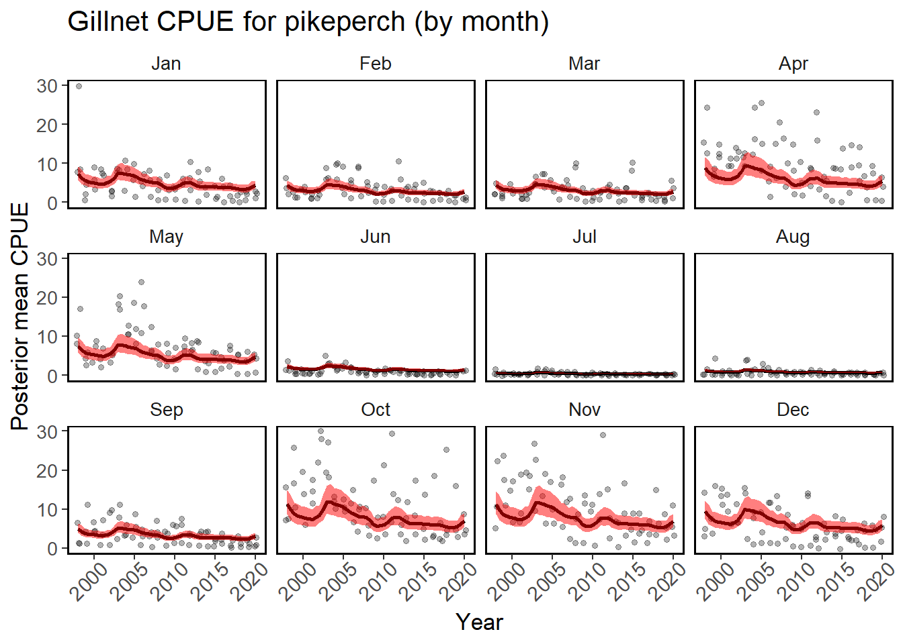
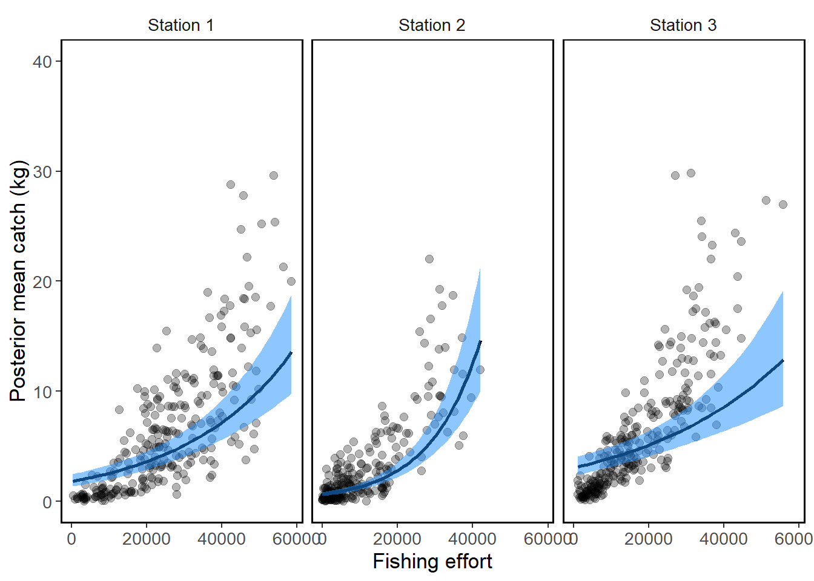

Bayesian CPUE standardisation using INLA
LTlang:Introduction
LTlang:Fisheries catches through time are usually correlated. Catch in one year is not independent of the catch in the previous year. In CPUE standardisation models we should ideally account for this autocorrelation. The GLM based models don’t really do that, despite being a popular approach. Therefore here we will develop and apply a different model which accounts for spatial and temporal correlation in our catches.
In this model we will estimate model parameters using approximate Bayesian inference as implemented in the INLA package. The approximate Bayesian inference runs much faster than full inference using MCMC approach and with INLA package it can be applied to a wide range of distributions. For a basic introduction into the Bayesian approach and why it is useful, check out these slides.
The slides and the model, together with a detailed description of all the modelling steps have been presented in the last lecture of the CPUE standardisation course, so we recommend you watch the lecture before applying the model. Also, before proceeding with CPUE standardisation, make sure you carefully assess and explore your data. We have prepared two courses and different scripts for data exploration, which you can find on our CPUE standardisation course webpage.
The model is coded in R language, so you will need R and RStudio to run it. If you need a brief introduction into R, check this introductory page from an online course on size based modelling.
LTlang:Model code
LTlang:The main model code is available in this R markdown script and is demonstrated using this dataset from 22 years of commercial pikeperch (Sander lucioperca) catches in the Baltic Sea. You can download the model and modify the script according to your needs. Before you run the model you will need to install all the R packages, as is explained in this R script.
To look at the model code and outputs without having to run the code, you can click here. After applying the model you should be able to plot predicted CPUE and its uncertainty through time, like in the plot below.

LTlang: Application of the model
LTlang:We are currently working on applying this model to CPUE standardisation of the long term data set from the Curonian Lagoon and Kaunas Water Reservoir in Lithuania. Stay tuned for more outputs. If you are interested to learn more, please contact us as lydekaipaliepus@gamtc.lt
